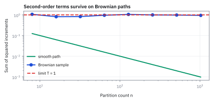

13.1 Why Ordinary Calculus Fails on Brownian Motion
chain rule ทิ้งพจน์กำลังสองของการขยับเพราะบนเส้นเรียบมันหายไป แต่บนเส้นทาง Brownian ผลรวมของพจน์นั้นเท่ากับเวลาที่ผ่านไป จึงต้องเก็บไว้
สัญญาสมมติตัวหนึ่งจ่ายเงิน \$1 ล้าน คูณกำลังสองของผลตอบแทนหนึ่งปีของ SPY ใช้แบบจำลองเส้นตรงของ 9.1 คือผลตอบแทนสะสม $R_t=\mu t+\sigma W_t$ drift 8% และความผันผวน 18% ต่อปี นักวิเคราะห์ใช้ chain rule ที่เรียนมา $d(R^2)=2R\,dR$ เห็นว่าค่าเฉลี่ยของ $dR$ คือ $\mu\,dt$ จึงได้ $\mathbb E[R_1^2]=\mu^2=0.0064$ สัญญาจ่ายเฉลี่ย \$6,400 ใช้ตัวเลขนี้ตั้งราคาขายได้ไหม?
ลองตอบก่อนเปิดเฉลย
ไม่ได้ ค่าเฉลี่ยจริงคือ $\mu^2+\sigma^2=0.0064+0.0324=0.0388$ หรือจ่ายเฉลี่ย \$38,800 มากกว่าที่คิดราว 6 เท่า ส่วนที่หายไป \$32,400 คือ $\sigma^2$ คูณหนึ่งปี มันมาจากผลรวมกำลังสองของการขยับเล็ก ๆ ที่ chain rule ทิ้งไป ถ้าขายที่ \$6,400 จะขาดทุนเฉลี่ย \$32,400 ต่อสัญญา (ยังไม่นับดอกเบี้ย)
สิ่งที่เราจะสร้าง
9.5 พบว่าผลรวมการขยับยกกำลังสองของเส้นทาง Brownian ไม่หายไปเมื่อซอยเวลาละเอียดขึ้น แต่นิ่งที่เวลาที่ผ่านไป หน้านี้ถามต่อว่าข้อเท็จจริงนั้นทำอะไรกับ calculus: chain rule ทิ้งพจน์กำลังสองได้เพราะบนเส้นเรียบพจน์นั้นหายไป บนเส้นทาง Brownian มันไม่หาย chain rule จึงตอบผิด และผิดเป็นตัวเงินได้แบบโจทย์เปิดเรื่อง
เราจะเขียน identity ที่เป็นจริงบนทุกเส้นทางก่อน ลองกับเส้นตรง แล้วลองกับเส้นทาง Brownian สี่ก้าวด้วยมือ จากนั้นพิสูจน์ว่าทำไม $(dW)^2$ แทนด้วย $dt$ ได้แม้มีตัวคูณ สร้างตารางคูณของ Itô ได้ chain rule ฉบับแก้ ตรวจด้วยการสุ่ม 20,000 เส้นทาง และจบที่ผลบนโต๊ะ: ความผันผวนวัดได้แม่น แต่ drift วัดแทบไม่ได้
ศัพท์ที่ใช้ในหัวข้อนี้
- Chain rule
- กฎหาการเปลี่ยนของ $f(x)$ จากการเปลี่ยนของ $x$ คือ $df=f'(x)\,dx$ ใช้ทุกครั้งที่มูลค่าเป็นฟังก์ชันของราคา เช่นราคา option ที่ขึ้นกับราคาหุ้น มันถูกบนเส้นเรียบเพราะพจน์กำลังสองทิ้งได้
- Increment
- การขยับของเส้นทางในหนึ่งท่อนเวลา $\Delta W_i=W_{t_i}-W_{t_{i-1}}$ เป็นก้อนที่เอามายกกำลังแล้วบวก
- Quadratic variation
- ค่าที่ผลรวมการขยับยกกำลังสองเข้าใกล้เมื่อซอยเวลาละเอียดขึ้น ของ SBM คือ $T$ (9.5) ใช้วัดความขรุขระสะสมของเส้นทาง และเป็นพจน์ที่ chain rule ปกติทิ้งไป
- Itô correction
- พจน์ $\tfrac12f''\,dt$ ที่ต้องเติมใน chain rule เมื่อสิ่งข้างในเป็นเส้นทาง Brownian มีอยู่เพราะความโค้งของ $f$ ทำงานกับกำลังสองของการขยับที่ไม่หาย
- Itô multiplication table
- กฎย่อสามข้อ $(dW)^2=dt$, $dW\,dt=0$ และ $(dt)^2=0$ เป็นตัวย่อของผลรวมที่พิสูจน์ในขั้นที่ 6 และ 7 ใช้ตัดสินว่าพจน์ไหนเก็บ พจน์ไหนทิ้ง
- Realized variance
- ผลรวมผลตอบแทนยกกำลังสองของช่วงหนึ่ง คือ quadratic variation ที่วัดจากข้อมูลจริง ใช้ประมาณความผันผวน (9.5)
สัญลักษณ์และหน่วย
| สัญลักษณ์ | ความหมาย | หน่วย |
|---|---|---|
| $W_t$ | SBM ที่เวลา $t$ (9.2) | $\sqrt{\text{yr}}$ |
| $T,\ n,\ \Delta t$ | ความยาวช่วง, จำนวนท่อน, ความยาวท่อน $T/n$ | ปี, นับ, ปี |
| $\Delta W_i,\ Z_i$ | การขยับของท่อนที่ $i$ และเลขสุ่ม $\mathcal N(0,1)$ ที่สร้างมัน $\Delta W_i=\sqrt{\Delta t}\,Z_i$ | $\sqrt{\text{yr}}$, ไม่มีหน่วย |
| $Q_n$ | ผลรวม $(\Delta W_i)^2$ บน $n$ ท่อน | ปี |
| $R_t,\ \mu,\ \sigma$ | ผลตอบแทนสะสมตามแบบจำลองเส้นตรง, drift, ความผันผวน | ไม่มีหน่วย, ต่อปี, ต่อ $\sqrt{\text{yr}}$ |
| $f,\ f',\ f''$ | ฟังก์ชันของตำแหน่ง, ความชัน, ความโค้ง | ตามสิ่งที่วัด |
| $g_{i-1},\ e_i$ | ตัวคูณที่รู้ค่าแล้วตอนต้นท่อนที่ $i$ และส่วนต่าง $(\Delta W_i)^2-\Delta t$ | ตามโจทย์, ปี |
ขั้นที่ 1 — บนเส้นเรียบ chain rule ทิ้งพจน์กำลังสองได้
เริ่มจาก identity ที่ไม่ประมาณอะไรเลย ตำแหน่งท้ายท่อนคือตำแหน่งต้นท่อนบวกการขยับ ยกกำลังสองแล้วกระจาย จากนั้นบวกทุกท่อน ฝั่งซ้ายหักกันเหลือปลายลบต้น ลองกับเส้นตรง $x(t)=t$ บนหนึ่งปี ซอย $n$ ท่อนเท่ากัน ท่อนละ $\Delta x_i=1/n$
บรรทัดที่สามเป็นจริงทุก $n$ ไม่มีการตัดพจน์ ผลรวมแรกคือสิ่งที่ chain rule $d(x^2)=2x\,dx$ นับ ผลรวมที่สองคือส่วนที่มันทิ้ง บนเส้นตรงผลรวมที่สองเป็น $1/n$ ซอยละเอียดขึ้นก็หายไป ส่วนผลรวมแรกเป็น $(n-1)/n$ ซึ่งเข้าหา $x_1^2=1$ พอดี (0.75 ที่ 4 ท่อน และ 0.999 ที่ 1,000 ท่อน)
ทำไมหาย? แต่ละท่อนขยับขนาด $\Delta t$ กำลังสองจึงมีขนาด $\Delta t^2$ บวก $n$ ท่อนแล้วยังเหลือ $\Delta t$ ค้างหนึ่งตัว ทุกเส้นที่มีความชันจำกัดเป็นแบบนี้ (9.5 ขั้นที่ 1) นี่คือเหตุผลเดียวที่ chain rule ทิ้งพจน์กำลังสองได้
ขั้นที่ 2 — identity เดียวกันบนเส้นทาง Brownian: สี่ก้าวด้วยมือ
โจทย์ให้อะไรมาบ้าง: identity ในขั้นที่ 1 ใช้แค่พีชคณิต จึงเป็นจริงกับเส้นทาง Brownian ด้วย ใช้หนึ่งปีซอยสี่ท่อน $\Delta t=0.25$ แต่ละท่อน $\Delta W_i=\sqrt{0.25}\,Z_i=0.5Z_i$ ตามการสร้างของ 9.2 ขั้นที่ 4 และเลขสุ่มสี่ตัว $Z=(0.31, -1.20, 0.85, 0.47)$
คำตอบ: ผลรวมแรก −0.574 บวกผลรวมกำลังสอง 0.620 ได้ $W_4^2=0.046225$ พอดี แต่ผลรวมกำลังสองตรงนี้ไม่ได้เล็กเลย ใหญ่กว่าคำตอบทั้งก้อนกว่าสิบเท่า เทียบกับเส้นตรงที่ 4 ท่อนได้ 0.25 และหายไปเมื่อซอยละเอียด คำถามคือของเส้นทาง Brownian จะหายไหม
ตรวจเองใน 10 วินาที: ท่อนที่สามใช้ตำแหน่งก่อนก้าว $W_2=-0.445$ คูณการขยับ 0.425 ได้ $2(-0.445)(0.425)=-0.37825$ การอ่านตัวคูณที่ต้นท่อนนี้จะเป็นเรื่องหลักของ 13.3
ขั้นที่ 3 — ผลรวมกำลังสองไม่หาย: เฉลี่ยเท่ากับเวลาพอดี
9.5 ขั้นที่ 4 และ 5 หาค่าเฉลี่ยและ variance ของ $Q_n$ ไว้แล้ว เรียกกลับมาดูในไม่กี่บรรทัด เพราะทั้งบทยืนอยู่บนมัน ใช้ $\Delta W_i=\sqrt{\Delta t}\,Z_i$, $\mathbb E[Z^2]=1$, $\mathbb E[Z^4]=3$ และความจริงที่ว่าท่อนที่ไม่ทับกันเป็นอิสระ
ความต่างกับเส้นเรียบอยู่ที่บรรทัดแรก การขยับของเส้นทาง Brownian มีขนาด $\sqrt{\Delta t}$ กำลังสองจึงมีขนาด $\Delta t$ ไม่ใช่ $\Delta t^2$ บวก $n$ ท่อนแล้ว $n$ ตัดกับ $1/n$ พอดี เหลือ $T$ ไม่ว่าจะซอยกี่ท่อน ขณะที่ความคลาดรอบ $T$ หดตาม $1/\sqrt n$
ค่า 0.620 ในขั้นที่ 2 ต่ำกว่า 1 อยู่ $0.38/0.707\approx0.54$ SD ซึ่งปกติสำหรับ 4 ท่อน ถ้าซอยรายวัน 252 ท่อน ผลรวมจะอยู่ในช่วง $1\pm0.089$ ราวสองในสามของเส้นทาง และถ้าซอยรายนาที 98,280 ท่อน ($252\times390$ จาก 9.1) มันแทบเป็นค่าคงที่ 1
Figure 13.1a — เส้นเรียบหายไป เส้นทาง Brownian เกาะที่เวลา

Figure 13.1b — ความคลาดของผลรวมกำลังสองหดตามรากของจำนวนท่อน

ขั้นที่ 4 — ผลรวมแรกเฉลี่ยศูนย์ คำตอบทั้งหมดอยู่ในส่วนที่ถูกทิ้ง
รู้แล้วว่าผลรวมที่สองเฉลี่ย $T$ แล้วผลรวมแรกล่ะ? ในท่อนที่ $i$ ตัวคูณ $W_{i-1}$ ถูกกำหนดแล้วก่อนก้าว ส่วน $\Delta W_i$ เป็นอิสระจากทุกอย่างก่อนหน้า (9.2 ขั้นที่ 1 บรรทัดที่สาม) ค่าเฉลี่ยของผลคูณจึงแยกเป็นผลคูณของค่าเฉลี่ยได้
ผลรวมแรกซึ่งเป็นสิ่งเดียวที่ chain rule ปกตินับ มีค่าเฉลี่ยศูนย์ทุกความละเอียด คำตอบทั้งหมดของ $\mathbb E[W_T^2]$ จึงมาจากผลรวมที่ chain rule ทิ้ง และได้ $T$ ตรงกับ $\operatorname{Var}(W_T)=T$ ที่ 9.2 รู้อยู่แล้ว chain rule ปกติตอบ 0 ให้ค่าเฉลี่ยของสิ่งที่ไม่เคยติดลบ
จังหวะที่ใช้ความอิสระคือการแยกค่าเฉลี่ย ทำได้เพราะ $W_{i-1}$ รู้ค่าก่อนก้าว ถ้าเผลอใช้ $W_i$ ปลายท่อนแทน ผลคูณจะลาก $(\Delta W_i)^2$ เข้ามาด้วย แล้วค่าเฉลี่ยไม่เป็นศูนย์อีก (pitfall ท้ายหน้าและ 13.3)
ขั้นที่ 5 — คำตอบของโจทย์เปิดเรื่อง: สัญญาจ่าย \$1 ล้าน คูณ R²
โจทย์ให้อะไรมาบ้าง: $R_t=\mu t+\sigma W_t$ โดย $\mu=0.08$, $\sigma=0.18$, $T=1$ ปี และ notional \$1 ล้าน ทุกท่อนขยับ $\Delta R_i=\mu\Delta t+\sigma\Delta W_i$ ใช้ identity ของขั้นที่ 1 กับ $R$ แทน $x$ แล้วหาค่าเฉลี่ยของสองผลรวมทีละก้อน
คำตอบ: สัญญาจ่ายเฉลี่ย 0.0388 ของ \$1 ล้าน คือ \$38,800 ผลรวมแรกที่ chain rule เห็นให้แค่ $\mu^2T^2=0.0064$ หรือ \$6,400 อีก \$32,400 มาจาก $\sigma^2(\Delta W_i)^2$ ที่รวมกันได้ $\sigma^2T$ พจน์อื่นในกำลังสองของ $\Delta R_i$ หายไปเมื่อซอยละเอียด: $\mu^2T^2/n$ เหลือ 0.0000254 ที่ 252 ท่อน และพจน์ไขว้มีค่าเฉลี่ยศูนย์ สังเกตว่าผลรวมของสองก้อนเท่ากับ $\mu^2T^2+\sigma^2T$ พอดีทุก $n$
ตรวจเองใน 10 วินาที: $R_1$ เป็น Normal ค่าเฉลี่ย 0.08 SD 0.18 ค่าเฉลี่ยของกำลังสองคือ variance บวกค่าเฉลี่ยกำลังสอง (1.4) $0.0324+0.0064=0.0388$ ได้ผลเดียวกันโดยไม่ใช้ calculus หน้านี้เลือกตัวอย่างที่ตอบได้สองทางโดยตั้งใจ เพื่อให้เห็นว่าทางไหนพลาด
ขั้นที่ 6 — ทำไม (dW)² แทนด้วย dt ได้ แม้มีตัวคูณ
ในขั้นที่ 3 ทุกท่อนมีน้ำหนัก 1 แต่เมื่อ $f$ ไม่ใช่ $x^2$ พจน์กำลังสองจะมีตัวคูณ $\tfrac12f''(W_{i-1})$ ที่เปลี่ยนไปตามเส้นทาง ยังแทน $(\Delta W_i)^2$ ด้วย $\Delta t$ ได้ไหม? ให้ $g_{i-1}$ เป็นตัวคูณใด ๆ ที่รู้ค่าตอนต้นท่อน และมีค่าเฉลี่ยกำลังสองไม่เกิน $G^2$ แล้ววัดผลรวมของส่วนต่าง $e_i:=(\Delta W_i)^2-\Delta t$
บรรทัดที่สามคือหัวใจ: เมื่อ $i\lt j$ ทุกอย่างยกเว้น $e_j$ รู้ค่าแล้วตอนต้นท่อน $j$ และ $e_j$ อิสระจากมันพร้อมค่าเฉลี่ยศูนย์ ค่าเฉลี่ยของผลคูณจึงเป็นศูนย์ variance ของผลรวมเหลือแค่พจน์ทแยง $n$ พจน์ พจน์ละขนาด $\Delta t^2$ รวมแล้วหายไปตาม $\Delta t$
ข้อสรุปคือ $\sum g_{i-1}(\Delta W_i)^2$ กับ $\sum g_{i-1}\Delta t$ ต่างกันน้อยลงเรื่อย ๆ จนเป็นศูนย์ นี่คือความหมายเต็มของ $(dW)^2=dt$: ภายในผลรวมที่ตัวคูณรู้ค่าก่อนก้าว กำลังสองของการขยับใช้เวลาแทนได้
ลองกับ $g_{i-1}=W_{i-1}$ ซึ่งมี $\mathbb E[W_{i-1}^2]=(i-1)\Delta t$: variance คือ $\sum_i(i-1)\Delta t\cdot2\Delta t^2=T^3(n-1)/n^2$ ได้ SD 0.0629 ที่ 252 ท่อน และ 0.0032 ที่ 98,280 ท่อน
ขั้นที่ 7 — ตารางคูณของ Itô: พจน์ไหนรอด
การขยับเล็ก ๆ มีสองชนิด คือเวลา $\Delta t$ กับการขยับสุ่ม $\Delta W$ ผลคูณอันดับสองมีสามแบบ และกำลังสามจะโผล่ใน Taylor ของขั้นถัดไป วัดขนาดแบบขั้นที่ 3: บวกทุกท่อนหนึ่งปีแล้วดูว่าเหลือเท่าไร ใช้ $\mathbb E|Z|=\sqrt{2/\pi}$ (9.2) และ $\mathbb E|Z|^3=2\sqrt{2/\pi}$ (9.5)
ทั้งสามหายไปเมื่อ $n$ โต เพราะขนาดต่อท่อนมีเวลามากกว่าหนึ่งกำลัง ($\Delta t^2$ หรือ $\Delta t^{3/2}$) บวก $n$ ท่อนแล้วยังเหลือ $n$ หรือ $\sqrt n$ อยู่ในตัวหาร มีแค่ $(\Delta W)^2$ ที่ขนาดต่อท่อนเป็น $\Delta t$ พอดี จึงรอดและรวมได้ $T$ ที่ 252 ท่อนกำลังสามยังเหลือ 0.1 แต่ลดตาม $1/\sqrt n$
เขียนผลเป็นตัวย่อได้ตารางสามข้อ $(dt)^2=0$, $dW\,dt=0$ และ $(dW)^2=dt$ ตัวย่อนี้อ่านว่า “เมื่อบวกทั้งช่วง” เสมอ ไม่ใช่สมการของท่อนเดียว
Figure 13.1c — ตารางคูณของ Itô

ขั้นที่ 8 — chain rule ของ Itô สำหรับ f(W)
ตอนนี้มีของครบที่จะซ่อม chain rule สำหรับ $f$ ใด ๆ ที่มีอนุพันธ์ถึงอันดับสาม และอนุพันธ์อันดับสามมีขนาดไม่เกิน $M$ เขียน Taylor ของแต่ละท่อนถึงพจน์กำลังสอง เศษที่เหลือไม่เกิน $\tfrac M6|\Delta W_i|^3$ แล้วบวกทุกท่อน
บรรทัดที่หกคือขั้นที่ 6 โดยใช้ $g_{i-1}=\tfrac12f''(W_{i-1})$ ซึ่งรู้ค่าตอนต้นท่อน จึงแทน $(\Delta W_i)^2$ ด้วย $\Delta t$ ได้ แล้วผลรวมกลายเป็นพื้นที่ใต้กราฟตามเวลา บรรทัดที่เจ็ดคือขั้นที่ 7: เศษกำลังสามรวมกันแล้วหายไป บรรทัดสุดท้ายเป็นตัวย่อของสามบรรทัดก่อนหน้า
เทียบกับ chain rule ปกติ $df=f'\,dW$ ส่วนที่เพิ่มคือ $\tfrac12f''\,dt$ เรียกว่า Itô correction ถ้า $f$ โค้งหงาย ($f''\gt0$) มันดันค่าเฉลี่ยของ $f$ ขึ้น ใส่ $f(w)=w^2$ ได้ $f''=2$ และ $d(W^2)=2W\,dW+dt$ คือขั้นที่ 4 ในรูปย่อ
ขั้นที่ 9 — ตรวจด้วยการสุ่ม: 20,000 เส้นทาง ท่อนละหนึ่งวันทำการ
โจทย์ให้อะไรมาบ้าง: โค้ดท้ายหน้าสร้าง 20,000 เส้นทางหนึ่งปี ท่อนละหนึ่งวันทำการ (252 ท่อน) ด้วย seed 131 วัดค่าเฉลี่ยของ $W_1^2$ และสองผลรวมของมัน และลองฟังก์ชัน $f(w)=e^w$ ที่ Itô กับ chain rule ปกติทำนายต่างกัน ฟังก์ชันนี้มี $f'=f''=e^w$ เอาค่าเฉลี่ยของสองข้าง พจน์ $e^W dW$ หายเพราะตัวคูณรู้ค่าก่อนก้าว (ขั้นที่ 4)
| ค่า | ทฤษฎี | ได้จากการสุ่ม | ห่างกี่ SE |
|---|---|---|---|
| $\mathbb E[W_1^2]$ | 1 | 1.0128 | +1.3 |
| $\mathbb E\big[\sum2W_{i-1}\Delta W_i\big]$ | 0 | 0.0130 | +1.3 |
| $\mathbb E[Q_{252}]$ | 1 | 0.99975 | −0.4 |
| $\operatorname{SD}(Q_{252})$ | 0.0891 | 0.0889 | — |
| $\mathbb E[e^{W_1}]$ | 1.6487 | 1.6457 | −0.2 |
| $\mathbb E[R_1^2]$ | 0.0388 | 0.03899 | +0.5 |
คำตอบ: ทุกแถวห่างทฤษฎีไม่เกินราว 1.3 SE ซึ่งเป็นความคลาดปกติของการสุ่ม สองแถวแรกบอกอะไรมากกว่านั้น: ในทุกเส้นทาง $W_1^2$ เท่ากับผลรวมแรกบวก $Q_{252}$ พอดี ความสุ่มเกือบทั้งหมดของ $W_1^2$ อยู่ในผลรวมแรก ส่วน $Q_{252}$ แทบเป็นค่าคงที่ SD 0.0889 ตรงกับ 0.0891 ของขั้นที่ 3
ถ้าใช้ chain rule ปกติกับ $e^{W}$ ค่าเฉลี่ยจะคงที่ที่ $e^0=1$ แต่การสุ่มได้ 1.6457 ห่างจาก 1 ถึง 42 SE ขณะที่ห่างค่าของ Itô แค่ 0.2 SE แถวสุดท้ายคือโจทย์เปิดเรื่อง: การสุ่มให้ 0.03899 ใกล้ 0.0388 ไม่ใช่ 0.0064
ตรวจเองใน 10 วินาที: SE ของ $\mathbb E[W_1^2]$ คือ SD ของ $W_1^2$ ซึ่งเท่ากับ $\sqrt2$ หารด้วย $\sqrt{20{,}000}\approx141.4$ ได้ 0.0100 และ $0.0128/0.0100\approx1.3$
ขั้นที่ 10 — ผลบนโต๊ะ: ความผันผวนวัดได้แม่น drift วัดแทบไม่ได้
ผลรวมกำลังสองที่ไม่หายคือเครื่องวัดความผันผวน ถ้าผลตอบแทนรายวันคือ $r_i=\sigma\Delta W_i$ (drift ของหนึ่งวันเล็กจนทิ้งได้) ผลรวม $r_i^2$ ของหนึ่งปีคือ $\sigma^2Q_{252}$ ส่วน drift ต้องประมาณจากผลรวมของผลตอบแทนเอง ซึ่งเท่ากับ $R_T$ ไม่ว่าจะซอยกี่ท่อน
หนึ่งปีของข้อมูลรายวันวัดความผันผวน 18% ได้แม่นราว ±0.80 จุด บรรทัดที่สามใช้ว่ารากของตัวเลขขยับครึ่งหนึ่งของสัดส่วนที่ตัวเลขขยับ (แบบ 9.5 ขั้นที่ 9) ถ้าซอยถี่ขึ้น SD นี้ลดลงอีกตาม $1/\sqrt n$
drift ไม่ได้อะไรจากการซอยเลย $\hat\mu$ ขึ้นกับปลายทาง $R_T$ ตัวเดียว หนึ่งปีให้ SD 18% ใหญ่กว่า drift 8% เอง จะเห็น drift 8% ห่างศูนย์สอง SD ต้องใช้ข้อมูล 20.25 ปี นี่คือเหตุผลที่ตลาดตั้งราคา option ด้วยความผันผวนได้ แต่ไม่มีใครตกลงกันได้เรื่อง expected return
คำถามที่ควรถามออกมาดัง ๆ
$(dW)^2=dt$ แปลว่าแต่ละก้าวยกกำลังสองได้ $\Delta t$ เป๊ะหรือ? ไม่ใช่ ก้าวเดียวมี $(\Delta W)^2=\Delta t\,Z^2$ ซึ่ง SD $\sqrt2\,\Delta t$ ใหญ่กว่าค่าเฉลี่ยของมันเอง ในขั้นที่ 2 ท่อนที่สองได้ 0.36 ส่วนท่อนแรกได้ 0.024 ทั้งที่ $\Delta t=0.25$ เท่ากัน สิ่งที่เท่ากับเวลาคือผลรวมของหลายท่อน
กำลังสองรอด แล้วทำไมกำลังสามไม่รอด? ขนาดต่อท่อนของกำลัง $p$ คือ $\Delta t^{p/2}$ บวก $n$ ท่อนได้สัดส่วนกับ $n^{1-p/2}$ (9.5 ขั้นที่ 6) ต่ำกว่าสองโตไม่สิ้นสุด เกินสองหายไป สองพอดีคือเส้นแบ่ง Taylor จึงต้องไปถึงพจน์ที่สองพอดี และไม่ต้องไปถึงพจน์ที่สาม
ตลาดจริงซอยได้ไม่ละเอียดไม่จำกัด แล้วเรื่องนี้ยังใช้ได้ไหม? ที่ 252 ท่อนต่อปี SD ของ $Q$ คือ 0.089 หรือ 8.9% ของค่า กฎ $(dW)^2=dt$ จึงเป็นการประมาณที่ดีขึ้นเมื่อวัดหรือ hedge ถี่ขึ้น 18.4 จะวัดว่าการ hedge วันละครั้งทำให้ผลคลาดไปเท่าไร
ความผิดที่ให้ตัวเลขผิดโดยไม่มีใครเตือน
ใช้ chain rule ปกติกับ payoff ที่โค้ง: สัญญาในโจทย์เปิดเรื่องถูกตั้งราคา \$6,400 แทน \$38,800 ส่วนที่ขาดคือ $\tfrac12f''$ คูณ quadratic variation ในที่นี้ $\tfrac12(2)(\sigma^2T)=0.0324$ ของ notional ทุก payoff ที่โค้งหงายถูกตีราคาต่ำไปแบบนี้ ส่วน payoff ที่โค้งคว่ำถูกตีสูงไป
ใช้ตัวคูณจากปลายท่อน: ถ้าคูณการขยับด้วย $W_i$ แทน $W_{i-1}$ ผลรวมจะเป็น $\sum2W_{i-1}\Delta W_i+2Q_n$ ค่าเฉลี่ยกลายเป็น $2T$ แทน 0 ในสี่ก้าวของขั้นที่ 2 ได้ $-0.57365+2(0.619875)=0.6661$ แทน −0.574 ใน backtest นี่คือการใช้ราคาที่ยังไม่เกิด (13.3)
อ่าน $(dW)^2=dt$ เป็นสมการของวันเดียว: ผลของ gamma ต่อ P&L ของวันหนึ่งคือ $\tfrac12\Gamma(\Delta S)^2$ ที่เกิดจริง ไม่ใช่ $\tfrac12\Gamma S^2\sigma^2\Delta t$ ทั้งสองมีค่าเฉลี่ยเท่ากัน แต่วันที่ราคาขยับ 3 SD ตัวแรกใหญ่กว่าตัวที่สอง 9 เท่า การอธิบาย P&L รายวันด้วยตัวที่สองจะผิดทุกวันที่ตลาดขยับแรง
ใช้ทำอะไรบนโต๊ะจริง
realized variance ที่โต๊ะ option ดูทุกวันคือ $\sigma^2Q_n$ ของขั้นที่ 10 และสัญญาในโจทย์เปิดเรื่องเป็นญาติของ variance swap ซึ่งจ่ายตาม realized variance โดยตรง (14.8) ส่วน Itô correction $\tfrac12f''\,dt$ จะกลับมาในบทที่ 14 เป็นพจน์ gamma ของสมการ Black–Scholes ที่แลกกับการเสื่อมมูลค่าตามเวลาของ option
งานประจำวันอีกอย่างคือตรวจโค้ดจำลอง: realized variance ของเส้นทางที่จำลองได้ต้องอยู่ใกล้ $\sigma^2T$ ภายใน $\sigma^2T\sqrt{2/n}$ ถ้าห่างกว่าหลายเท่า แปลว่าโค้ดลืมคูณ $\sqrt{\Delta t}$ หรือใช้หน่วยเวลาผิด (9.2 ขั้นที่ 4)
สามโจทย์ตรวจความเข้าใจ
1. สัญญาแบบโจทย์เปิดเรื่อง แต่อายุหกเดือน จ่ายเฉลี่ยเท่าไร และ chain rule ปกติจะบอกเท่าไร?
เฉลย
ใช้ $\mathbb E[R_T^2]=\mu^2T^2+\sigma^2T$ กับ $T=0.5$: $0.0064(0.25)+0.0324(0.5)=0.0016+0.0162=0.0178$ จ่ายเฉลี่ย \$17,800 chain rule ปกติเห็นแค่ $\mu^2T^2=0.0016$ หรือ \$1,600 ส่วนที่ขาด \$16,200 คือ $\sigma^2T$ ซึ่งโตตามเวลาตรง ๆ ส่วนของ drift โตตามกำลังสองของเวลา ช่วงยิ่งสั้น ส่วนของความผันผวนยิ่งครอง
2. ใช้ chain rule ของ Itô หา $\mathbb E[W_1^4]$ โดยไม่อินทิเกรต density
เฉลย
$f(w)=w^4$ มี $f'=4w^3$ และ $f''=12w^2$ จึงได้ $d(W^4)=4W^3dW+6W^2dt$ เอาค่าเฉลี่ย พจน์ $dW$ หายเพราะตัวคูณรู้ค่าก่อนก้าว เหลือ $\mathbb E[W_T^4]=6\int_0^T\mathbb E[W_t^2]\,dt=6\int_0^Tt\,dt=3T^2$ ที่ $T=1$ ได้ 3 ตรงกับ $\mathbb E[Z^4]=3$ ที่ 9.5 อินทิเกรตทีละส่วนมา
3. ต้องใช้ผลตอบแทนรายวันกี่วันจึงวัดความผันผวน 18% ได้ SD ±0.5 จุด และถ้าใช้แท่ง 5 นาทีตลอดหนึ่งปีจะได้ SD เท่าไร?
เฉลย
จากขั้นที่ 10 SD ของ $\hat\sigma$ จาก $n$ ผลตอบแทนคือ $\sigma\sqrt{2/n}/2=\sigma/\sqrt{2n}$ ตั้ง $0.18/\sqrt{2n}=0.005$ ได้ $2n=36^2=1{,}296$ คือ $n=648$ วัน ราว 2.57 ปีของวันทำการ แท่ง 5 นาทีมี 78 แท่งต่อวัน หนึ่งปีได้ $78\times252=19{,}656$ แท่ง SD คือ $0.18/\sqrt{39{,}312}\approx0.00091$ หรือ ±0.09 จุด แต่ drift ยังมี SD 18% เท่าเดิม เพราะไม่ได้อะไรจากการซอย
คำนวณซ้ำด้วย JavaScript
รันใน Node.js ได้โดยไม่ต้องติดตั้งอะไร โค้ดคำนวณสองผลรวมของเส้นตรงและของสี่ก้าวด้วยมือ ขนาดของทุกช่องในตารางคูณ คำตอบของโจทย์เปิดเรื่อง แล้วสุ่ม 20,000 เส้นทางด้วยเครื่องสุ่มที่มี seed เพื่อเทียบกับทฤษฎีเป็นจำนวน SE ฟังก์ชันปฏิเสธ input ที่ไม่มีความหมาย และพิมพ์ JSON บรรทัดเดียว
function check(n, T) {
if (!Number.isInteger(n) || n < 1) throw new RangeError('Need a whole number of steps n >= 1');
if (!(T > 0) || !Number.isFinite(T)) throw new RangeError('Need a finite horizon T > 0');
}
// Smooth path x(t) = t on [0, T]: x_T^2 = sum 2 x dx + sum dx^2, and the second sum is T^2/n.
function smoothSums(n, T = 1) {
check(n, T);
return {first: T * T * (n - 1) / n, squares: T * T / n};
}
// The same exact identity on a Brownian path built from given standard Normals.
function handPath(z, dt) {
if (!Array.isArray(z) || z.length === 0 || !z.every(Number.isFinite)) throw new TypeError('Need a nonempty list of finite shocks');
if (!(dt > 0)) throw new RangeError('Need dt > 0');
const dW = z.map(x => Math.sqrt(dt) * x), W = [0];
for (const d of dW) W.push(W[W.length - 1] + d);
const ito = dW.reduce((s, d, i) => s + 2 * W[i] * d, 0);
const Q = dW.reduce((s, d) => s + d * d, 0);
return {dW, W, ito, Q, total: ito + Q, WT2: W[W.length - 1] ** 2};
}
// Sum of squared increments Q_n: mean T and SD T sqrt(2/n), because E[Z^2] = 1 and Var(Z^2) = 2.
function qv(n, T = 1) {
check(n, T);
return {mean: T, sd: T * Math.sqrt(2 / n)};
}
// SD of sum W_(i-1) [(dW_i)^2 - dt]: the weight is known before each step, so cross terms vanish.
function weightedSD(n, T = 1) {
check(n, T);
return Math.sqrt(T ** 3 * (n - 1) / (n * n));
}
// Expected size of the three products that the multiplication table sends to zero.
function tableSizes(n, T = 1) {
check(n, T);
const absZ = Math.sqrt(2 / Math.PI);
return {dtdt: T * T / n, dWdt: absZ * T ** 1.5 / Math.sqrt(n), cube: 2 * absZ * T ** 1.5 / Math.sqrt(n)};
}
// Contract paying notional * R_T^2 with R_t = mu t + sigma W_t (linear model of 9.1).
function squaredReturnPayout(mu, sigma, T, notional) {
if (![mu, sigma, T, notional].every(Number.isFinite) || sigma < 0 || T <= 0) throw new RangeError('Need finite inputs, sigma >= 0 and T > 0');
const chainRule = notional * mu * mu * T * T;
return {chainRule, ito: chainRule + notional * sigma * sigma * T, missing: notional * sigma * sigma * T};
}
// mulberry32 + Box-Muller: seeded standard Normals, so every reader gets the same numbers.
function normals(seed) {
let a = seed >>> 0, spare = null;
const u = () => {
a = (a + 0x6D2B79F5) >>> 0;
let t = Math.imul(a ^ (a >>> 15), a | 1);
t ^= t + Math.imul(t ^ (t >>> 7), t | 61);
return (((t ^ (t >>> 14)) >>> 0) + 0.5) / 4294967296;
};
return () => {
if (spare !== null) { const z = spare; spare = null; return z; }
const r = Math.sqrt(-2 * Math.log(u())), angle = 2 * Math.PI * u();
spare = r * Math.sin(angle);
return r * Math.cos(angle);
};
}
// Simulate paths on a grid and average W_T^2, its two pieces, e^(W_T) and R_T^2.
function simulate(paths, steps, T, mu, sigma, seed) {
check(steps, T);
if (!Number.isInteger(paths) || paths < 2) throw new RangeError('Need at least two paths');
const z = normals(seed), sq = Math.sqrt(T / steps);
let w2 = 0, ito = 0, q = 0, qq = 0, ew = 0, r2 = 0;
for (let p = 0; p < paths; p++) {
let w = 0, s = 0, Q = 0;
for (let k = 0; k < steps; k++) {
const d = sq * z();
s += 2 * w * d; Q += d * d; w += d;
}
const R = mu * T + sigma * w;
w2 += w * w; ito += s; q += Q; qq += Q * Q; ew += Math.exp(w); r2 += R * R;
}
const meanQ = q / paths;
return {meanW2: w2 / paths, meanIto: ito / paths, meanQ, sdQ: Math.sqrt((qq - paths * meanQ * meanQ) / (paths - 1)),
meanExpW: ew / paths, meanR2: r2 / paths};
}
const mu = 0.08, sigma = 0.18, N = 20000;
const hand = handPath([0.31, -1.20, 0.85, 0.47], 0.25);
const sdRV = sigma * sigma * Math.sqrt(2 / 252);
const sim = simulate(N, 252, 1, mu, sigma, 131);
// Distance from theory in standard errors; each SD is the exact one-path SD of that quantity.
const se = sd => sd / Math.sqrt(N);
const zScores = {
W2: (sim.meanW2 - 1) / se(Math.SQRT2),
ito: sim.meanIto / se(Math.sqrt(2 * 251 / 252)),
Q: (sim.meanQ - 1) / se(Math.sqrt(2 / 252)),
expW: (sim.meanExpW - Math.exp(0.5)) / se(Math.sqrt(Math.E ** 2 - Math.E)),
expWChainRule: (sim.meanExpW - 1) / se(Math.sqrt(Math.E ** 2 - Math.E)),
R2: (sim.meanR2 - (mu * mu + sigma * sigma)) / se(Math.sqrt(2 * sigma ** 4 + 4 * mu * mu * sigma * sigma))
};
console.log(JSON.stringify({
hook: squaredReturnPayout(mu, sigma, 1, 1e6),
smooth: [4, 252, 1000].map(n => smoothSums(n)),
hand, handScore: (hand.Q - 1) / qv(4).sd,
qvSD: [4, 252, 98280].map(n => qv(n).sd),
weighted: [252, 98280].map(n => weightedSD(n)),
table: [252, 98280].map(n => tableSizes(n)),
sim, zScores,
expW: {ito: Math.exp(0.5), chainRule: 1},
lateWeight: hand.ito + 2 * hand.Q,
desk: {sdRV, sdVol: sdRV / (2 * sigma), driftYears: (2 * sigma / mu) ** 2},
exercises: {halfYear: squaredReturnPayout(mu, sigma, 0.5, 1e6), fourthMoment: 6 * 1 ** 2 / 2,
daysFor05: 0.5 * (sigma / 0.005) ** 2, bars: 78 * 252, barVolSD: sigma / Math.sqrt(2 * 78 * 252)}
}));ที่มาที่ไป
ปี 1900 Louis Bachelier ใช้การเดินสุ่มแบบ Brownian เป็นแบบจำลองราคาในวิทยานิพนธ์ที่ปารีส แต่ยังไม่มี calculus สำหรับฟังก์ชันของมัน ปี 1923 Norbert Wiener สร้างวัตถุนี้ให้มีอยู่จริงทางคณิตศาสตร์ และปี 1933 Paley, Wiener และ Zygmund พิสูจน์ว่าเส้นทางเกือบทุกเส้นไม่มีความชันที่จุดใดเลย chain rule ปกติจึงไม่มีที่ยืน ปี 1944 Kiyosi Itô นิยาม stochastic integral ที่อ่านตัวคูณที่ต้นท่อน และปี 1951 ตีพิมพ์ chain rule ฉบับที่เก็บพจน์กำลังสอง ซึ่งคือเรื่องของ 13.2
ข้อจำกัด: สมมติอะไร และของจริงเป็นอย่างไร
| เรื่อง | หน้านี้สมมติว่า | ของจริง | ผลเวลาใช้งาน |
|---|---|---|---|
| ความต่อเนื่อง | เส้นทางไม่กระโดด | ราคากระโดดตอนข่าวและตอนเปิดตลาด | ผลรวมกำลังสองรวมกำลังสองของการกระโดดเข้าไปด้วย พจน์ $\tfrac12f''\,dt$ อย่างเดียวไม่พอ |
| ความถี่ | ซอยได้ละเอียดไม่จำกัด | วัดหรือ hedge ได้วันละไม่กี่ครั้ง | $Q$ คลาดได้ $\sqrt{2/n}$ ของค่า คือ 8.9% ที่ 252 ท่อน |
| ความผันผวน | $\sigma$ เดียวตลอดช่วง | $\sigma$ เปลี่ยนตลอดเวลา | ผลรวมกำลังสองเข้าหาผลรวมของ variance ตามเวลาแทน $\sigma^2T$ กฎยังใช้ได้ถ้าใส่ค่านั้น |
| ราคาที่เห็น | ราคาที่เห็นคือราคาจริง | ราคาเด้งระหว่าง bid กับ ask | วัดถี่เกินไป realized variance พองเกินจริง (9.5 ขั้นที่ 10) |
สิ่งที่ควรตอบได้หลังอ่าน
- $x_T^2-x_0^2=\sum2x_{i-1}\Delta x_i+\sum(\Delta x_i)^2$ เป็นจริงทุกเส้นทาง chain rule ปกตินับแค่ผลรวมแรก
- บนเส้นเรียบผลรวมกำลังสองหายตาม $1/n$ บนเส้นทาง Brownian มันเฉลี่ย $T$ และคลาด $T\sqrt{2/n}$
- $(dW)^2=dt$ แปลว่า $\sum g_{i-1}(\Delta W_i)^2$ กับ $\sum g_{i-1}\Delta t$ ต่างกันจนเป็นศูนย์เมื่อตัวคูณรู้ค่าก่อนก้าว ส่วน $dW\,dt$, $(dt)^2$ และกำลังสามหายไป
- $df=f'\,dW+\tfrac12f''\,dt$: สัญญา \$1 ล้าน คูณ $R^2$ จ่ายเฉลี่ย \$38,800 ไม่ใช่ \$6,400 และ $\mathbb E[e^{W_1}]=1.6487$ ไม่ใช่ 1
- ข้อมูลรายวันหนึ่งปีวัดความผันผวน 18% ได้ ±0.80 จุด แต่ต้องใช้ 20.25 ปีจึงเห็น drift 8% ห่างศูนย์สอง SD
13.2 จะใช้ Taylor แบบเดียวกันกับ $f(t,X_t)$ ที่ $X$ มีทั้ง drift และความผันผวน ได้ Itô's lemma เต็มรูป แล้วใช้มันถามว่าราคา SPY ปีหน้าอยู่ตรงกลางที่ไหน